¿Qué es?
Una red informática es un conjunto de dispositivos que se están interconectados entre si a través de un medio por el cual estos intercambian y comparten información. Estan formados por:
Servidores: son los que procesan el flujo de los datos y controlan la red.
Clientes: se refiere a los computadores que no son servidores.
Medios de transmisión: cableado que permite la transmisión de la información.
Elementos de hardware: piezas que permiten el establecimiento físico de la red.
Elementos de software: programas requeridos para administrar todo el sistema operativo.
Como funcionan
El funcionamiento de las redes informáticas viene definido por distintos estándares, el estándar más extendido es el modelo IP que se basa en el modelo teórico OSI.
La estructura de una red puede ser de cliente-servidor donde los dispositivos desempeñan las funciones de servidor y cliente ofrece y consume información o recursos.
Modelo OSI

El modelo OSI se puede ver como un lenguaje universal para la conexión de las redes de equipos. Se basa en el concepto de dividir un sistema de comunicación en siete capas abstractas, cada una apilada sobre la anterior.
Tipo de redes
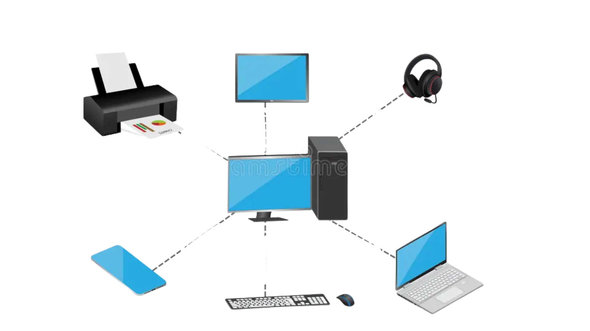
Red de área personal (PAN): esta formada por los dispositivos de una única persona.
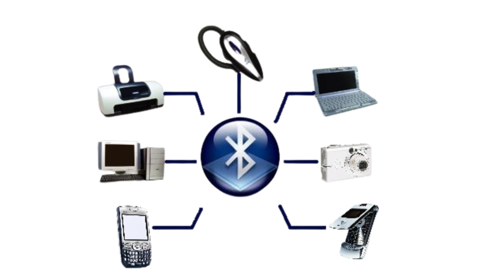
Red inalámbrica de área personal (WPAN): es como red PAN, pero de conexión inalámbrica.
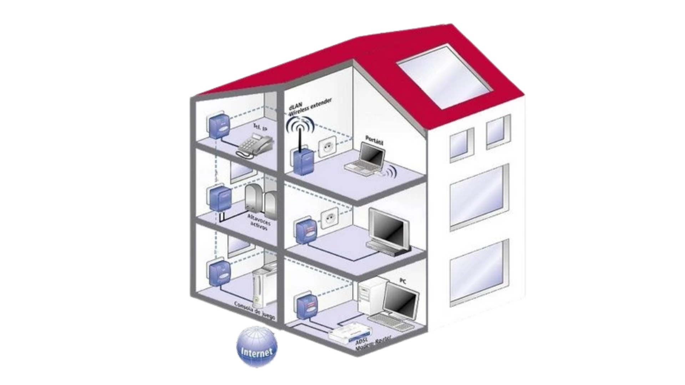
Red de área local (LAN): son conexiones de rango de alcance local como dentro de un mismo edificio.
Red de área local inalámbrica (WLAN): es una red LAN, pero inalámbrica.
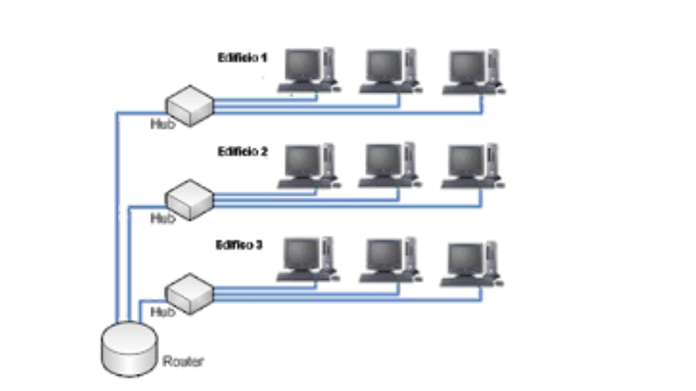
Red de área de campus (CAN): es una red de alta velocidad que conecta las redes locales en un área geográfica, como dentro de un campus universitario.
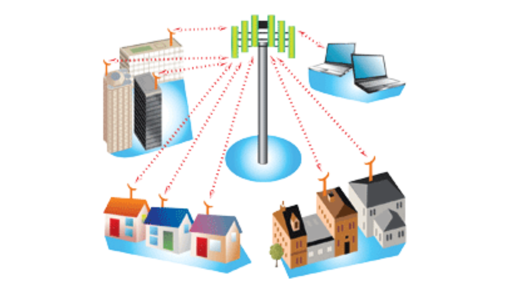
Red de área metropolitana (MAN): red de alta velocidad que aporta cobertura en un área geográfica extensa.
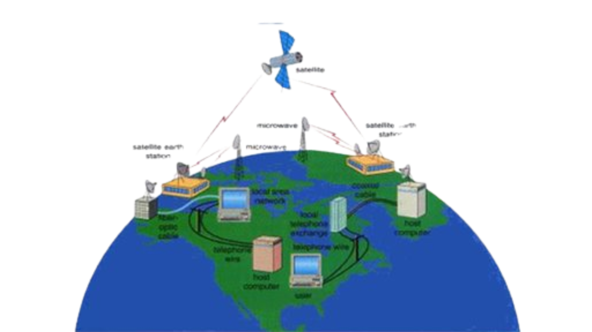
Red de área amplia (WAN): cobertura a un área extensa utilizado fibra óptica o satélites.
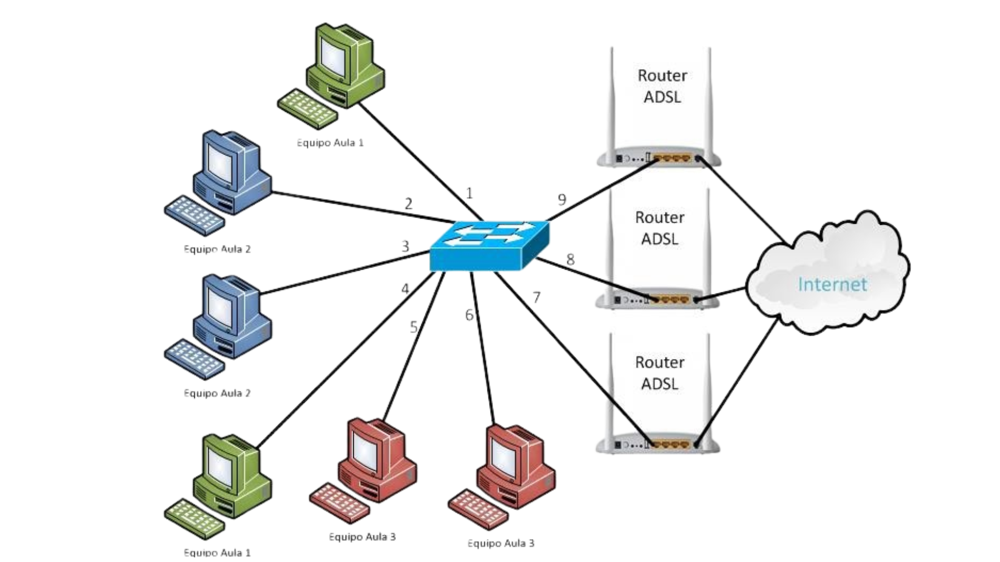
Red LAN lógica (VLAN): se instala sobre una red física para incrementar el rendimiento y la seguridad.
Funciones
La función principal de las redes informáticas es compartir recursos e información en la distancia. Esto se realiza asegurando siempre la confiabilidad y seguridad de la información.
Las redes informáticas sirven para garantizar la disponibilidad de la información y aumentar la velocidad de transmisión de los datos, reduciendo el coste general de estas acciones.
Protocolos
Los protocolos de comunicación son normas y reglas estandarizadas que se encargan de que los datos entre dispositivos informáticos en una red se puedan transmitir con integridad.
Su finalidad es conseguir que los dispositivos, incluso si tienen arquitecturas o sistemas operativos diferentes, puedan interactuar entre sí eficientemente.
Tipos de protocolos
TCP/IP (Transmission Control Protocol/Internet Protocol): protocolos que se usan en Internet. Pero, además de la navegación web, en los correos y en los contenidos multimedia. Pueden fragmentar volúmenes de datos muy grandes en otros más pequeños para que se puedan enviar por rutas diferentes y luego ensamblarse de nuevo en destino. TCP se encarga de verificar el envío de los paquetes para mantener la fiabilidad durante la transmisión, el protocolo IP los dirige a través de las redes.
UDP (User Datagram Protocol): es una alternativa al anterior más ligera y rápida. Destaca por su baja latencia, ya que no realiza comprobaciones de recepción ni retransmite paquetes perdidos. Por tanto, se emplea cuando la prioridad es la velocidad.
HTTP y HTTPS (HyperText Transfer Protocol): protocolo que permite a los navegadores comunicarse con un servidor para transferir páginas web. Se encarga de definir la estructura de las solicitudes y respuestas para cargar texto, imágenes, vídeos, etc.
FTP (File Transfer Protocol): FTP es un protocolo diseñado específicamente para la transferencia de archivos entre un cliente y un servidor. A diferencia de otros protocolos de comunicación, puede mover volúmenes de datos grandes de manera estructurada y eficiente.
DNS (Domain Name System): El DNS se encarga de traducir nombres de dominio que sean legibles para nosotros, como “www.google.com”, en direcciones IP que los sistemas puedan comprender.
DHCP (Dynamic Host Configuration Protocol): DHCP es un protocolo que se usa en redes informáticas para asignar direcciones IP de manera automática a los dispositivos en una red, con el objetivo de eliminar la necesidad de configuración manual.
SMTP (Simple Mail Transfer Protocol) Los protocolos de comunicación SMTP regulan el envío de correos electrónicos desde los clientes a los servidores de correo. Estos siguen varias etapas entre emisor y destinatario, e incluyen servidores intermedios.
Interconexiones
Un dispositivo de interconexión de redes es un término ampliamente utilizado para cualquier hardware que conecte diferentes recursos de red. Las interconexiones puden ser del tipo:
Una sola LAN
Dos LAN conectadas entre sí (LAN-LAN)
Una LAN conectada a una WAN (LAN-WAN)
Dos LAN conectadas a través de una WAN (LAN-WAN-LAN)
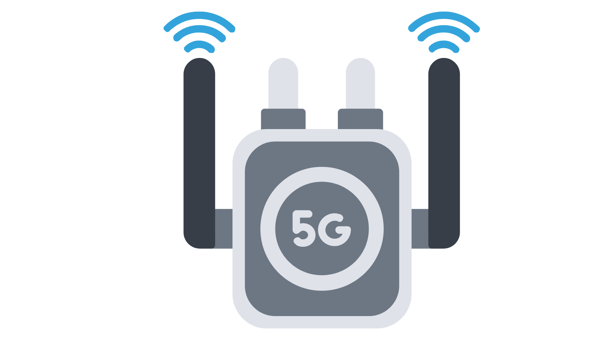
Repetidores: se utilizan para extender la longitud de la red.
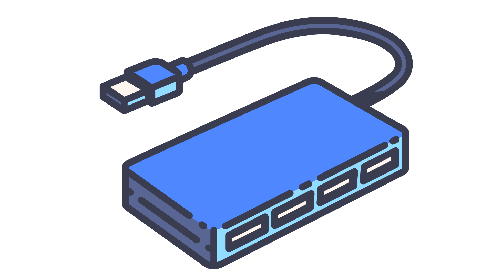
Hubs: es un repetidor multipuerto, actúa como concentrador y conecta diferentes cables de diferentes conexiones.
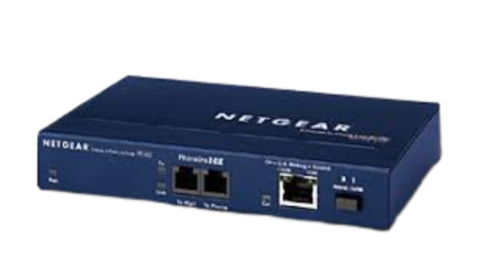
Bridge: Es un repetidor con funcionalidad adicional de filtrado al leer las direcciones MAC de origen y destino. También se usa para interconectar dos LAN que funcionan en el mismo protocolo.
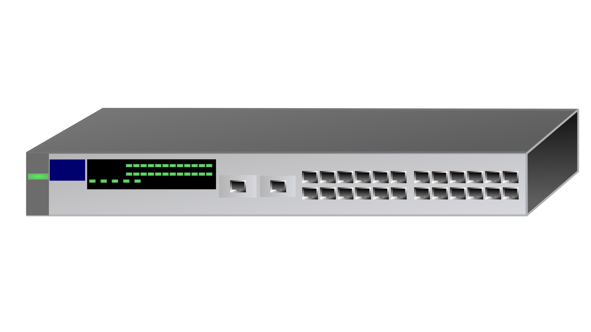
Switch: es un puente de múltiples puertos. El conmutador es muy eficiente, realiza una verificación de errores antes de reenviar paquetes.
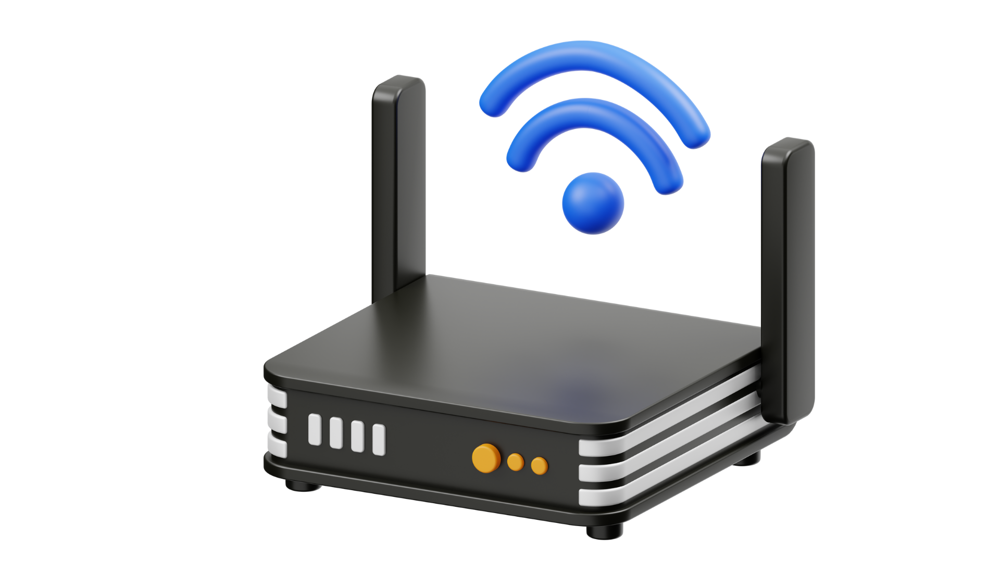
Router: Los enrutadores enlazan dos o más redes diferentes, estas pueden constar de varios tipos de segmentos de red LAN.
Gateway: dispositivos de conexión multipropósito para crear uniones entre redes diferentes.